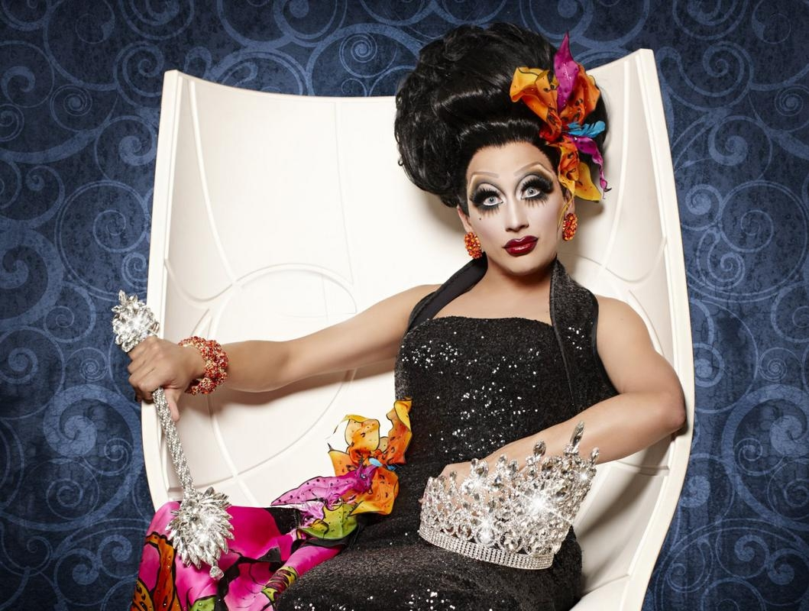
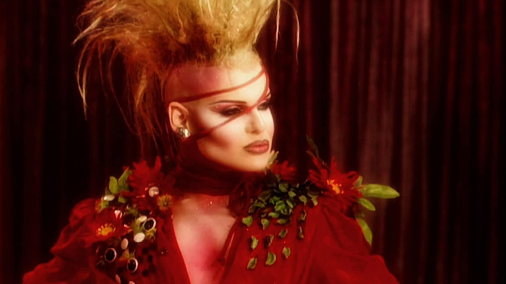
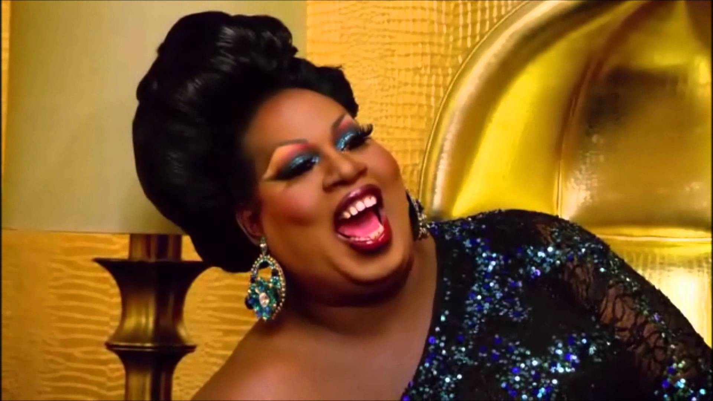
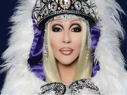
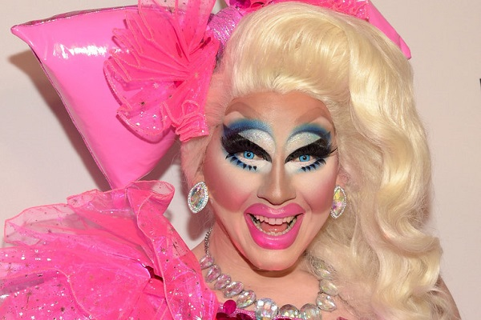
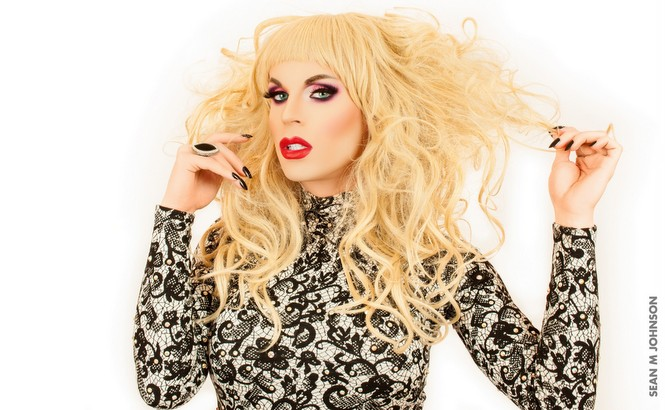
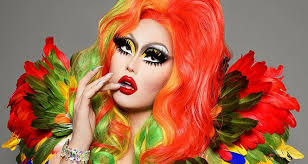
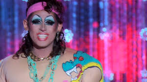

Les meilleurs des Drags
-
Bianca Del Rio
Sans doute la plus marquante de toutes les candidates. Ce n’est pas la plus belle, celle qui a le plus beau maquillage ou les plus belles tenues, mais elle possède un charisme et un humour mordant qui lui permettent de dépasser tout le monde d’une tête.
-
Nina Flowers
Pour la saison 1 de drag race et la découverte de cet univers, Nina est une des participantes les plus inoubliables avec Shannel. À mon humble avis Nina aurait dû gagner la couronne de par son style très particulier et coloré.
-
Latrice Royal
Niveau charisme Latrice se pose très haut. 4ème de la saison 4. Une des meilleurs replique de l'emission "Get those nuts away from my face!" => Éloigne ces noix de mon visage!
-
Chad Mickaels
Dans le Top 3 des meilleurs Snatch Game avec Judge Judy de Bianca Del Rio. Chad Michael a véritablement montré à tous qu'elle était l'unique sosie de Cher. "I'm Cher, Bitch!". Elle n'a pas obtenu la couronne face à Sharon Needles dans la saison 4, mais a su détrôner les autres drags dans la saison 1 de All Stars.
-
Trixie Mattel
Son maquillage reste encore pour moi incompréhensible. Elle dégage une douceur, un vrai barbie drag. Humoriste, comédienne, chanteuse et musicienne, elle a un éventail de talents large et pourtant elle a dû revenir dans une saison de All Stars 3 pour être couronnée.
-
Katya Zamolodchikova
Miss Congeniality de la saison 10. Sa personnalité comique insensée mélangée à un accent russe fait fondre le coeur du monde. Katya aime beaucoup jouer le rôle d'une prostituée russe. D'ailleurs elle le chante dans "Read U Wrote U" "The only high class Russian whore"
-
Kim Chi
Saison 8, il me semble la première Coreano-Americaine de l'émission. Des tenues et un maquillage qui fait manga / animé. Un comportement quelque peu à côté de la plaque et une raideur exceptionnelle pendant les phases de dance. Voilà comment elle décrit son personnage : "Kim Chi est un personnage d'anime en prise de vues réelles dont la vision de la mode peut être décrite comme un "napperon bionique". J'imagine mon aura comme un tableau de couleurs ultraviolettes qui crachent des paillettes. Je glorifie tout ce qui est mignon, drôle, bizarre et exotique."
-
Crystal Methyd
Coupe Mulet! j'adore Crystal Methyd, tellement loufoque et doux. Un agneau avec une coupe mulet. Ses drags sont plus étranges les unes que les autres. On la voit grandir dans la saison que ce soit au niveau de son maquillage ou de son comportement.